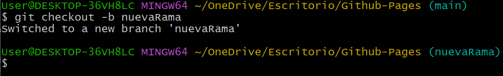
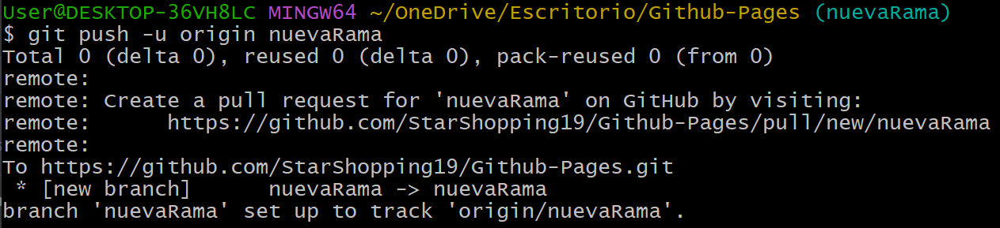
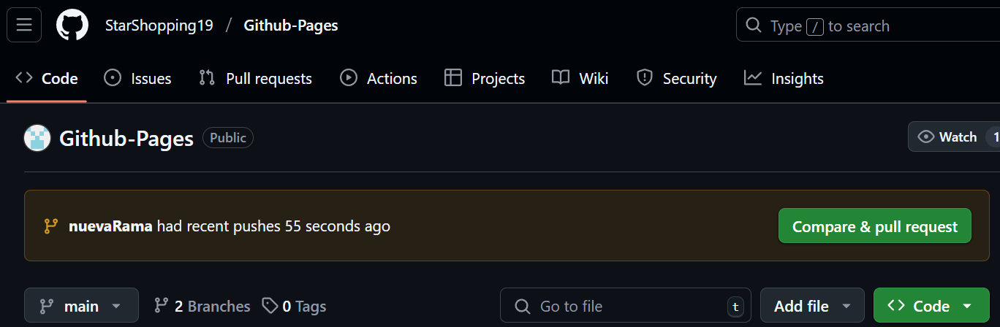
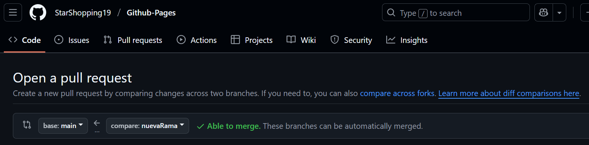
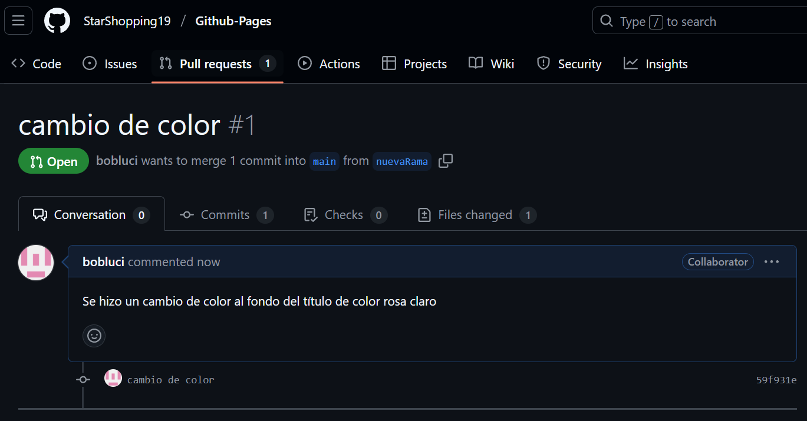

Los Pull Requests (PRs) en GitHub son una herramienta esencial para la colaboración en proyectos de desarrollo. Permiten a los equipos trabajar en código de forma ordenada, proponer cambios y revisarlos antes de integrarlos en la rama principal.
Para realizar cambios se debe evitar usar la rama principal (main) pues, puede llegar a causar conflictos
como sobrescribir el trabajo no sincronizado de otros colaboradores.
Por lo mencionado anteriormente, se debe crear
una nueva rama, donde cada contribuyente maneje una rama personal.
1️⃣ Crear una nueva rama
git checkout -b nuevaRama
2️⃣ Realizar cambios en el código
git add .
git commit -m "Descripción de los cambios realizados"

3️⃣ Subir la Rama a GitHub
git push -u origin nuevaRama
💻 Se puede verificar la nueva rama creada en el github (2 branches)
1️⃣ Abrir un Pull Request
✅ Ve a tu repositorio en GitHub.
Te notificará un push reciente en la rama previamente creada:
✅ En "Compare & pull request".
Se comparan las ramas para verificar hacer posible el merge sin problemas:
✅ Agregar un comentario claro del cambio realizado.
Una vez comentado, haz clic en "Create Pull Request"
✅ Pull request creado.
Una vez revisado, se decidirá aprobar el PR si todo está bien
2️⃣ Hacer merge del Pull Request
a. Haz clic en "Merge Pull Request"
b. Elimina la rama para mantener el repositorio ordenado y listo para nuevas tareas
✔ Especificar claramente los cambios para ayudar en la revisión.
✔ Usar
revisiones de código (Code Reviews) para mejorar calidad y
evitar errores.
✔ Etiquetas y asignaciones para organizar
PRs dentro del equipo.
✔ Resolver conflictos antes de hacer merge
si hay cambios incompatibles